A Phylogenetic Analysis of Covariance Structure in the Skull of Anthropoid Primates
Guilherme Garcia & Gabriel Marroig
University of São Paulo - Brasil
Skull Development
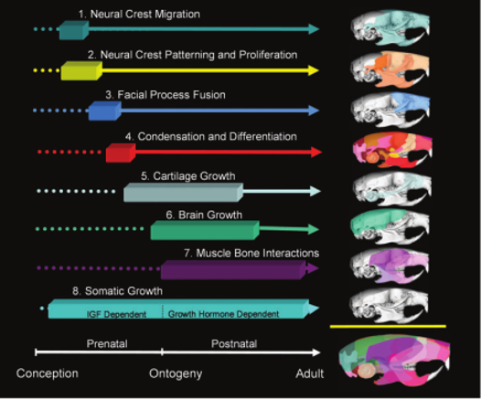
Hallgrímsson et al. (2008)
Developmental Trajectories
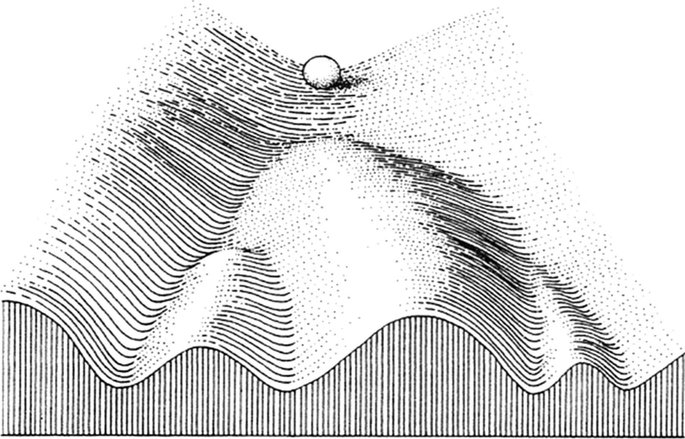
Waddington (1942)
Canalization;
Stabilizing Selection.
- developmental systems;
- functional interactions.
We expect that changes in covariance structure between sister lineages will display a non-random pattern consistent with developmental and functional interactions.
Objective
We investigate the evolution of skull size-shape covariance structure in anthropoid primates in a phylogenetic framework.
Sample
5108 individuals;
109 species.
Measurements
log Centroid Size;
Local shape variables (Márquez et al., 2012):
- log volume transformations;
- TPS function.
Landmarks
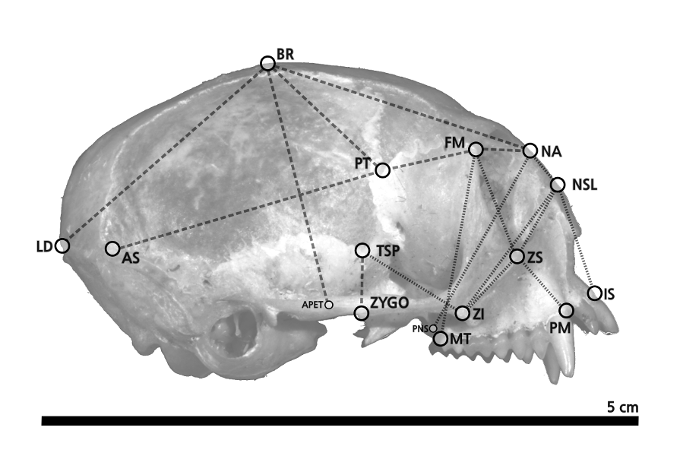
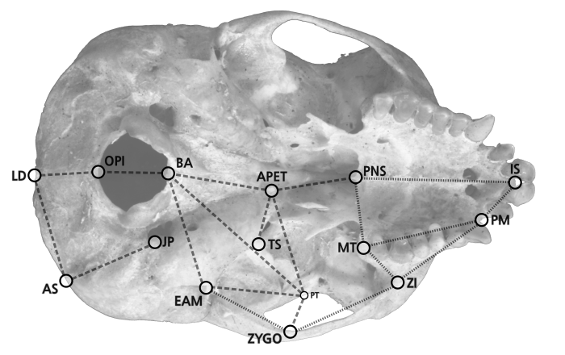
Skull Regions

Estimating Covariance Matrices
Linear models to correct for fixed effects:
- sexual dimorphism, subspecific variation.
Bayesian framework (MCMCglmm; Hadfield, 2010):
- posterior distribution of P-matrices.
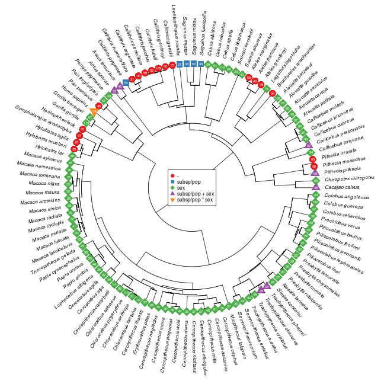
Diversity Decomposition
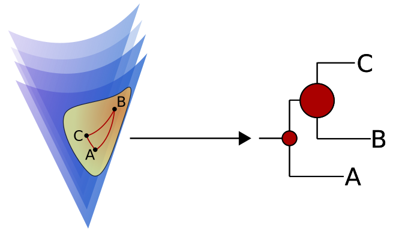
Pavoine et al. (2008)
Riemannian Distances
Distance among covariance matrices is estimated as
\[ \delta_{ij} = \|Log(\mathbf{C}_i \mathbf{C}_j^{-1})\|_F \]
where
\[ \|\mathbf{C}\|_F = tr(\mathbf{C}^t\mathbf{C})^\frac{1}{2} \]
Matrix Diversity Estimation
For a fully resolved tree, diversity \(w\) on node \(i\) is estimated as
\[ w_i = \frac{n_i}{n_T}\bigg[\frac{n_{d1}n_{d2}} {n_i^2} \frac{D_{\Delta}^2(P_{d1}, P_{d2})}{2}\bigg] \]
\(d1\), \(d2\): descendants of node \(i\);
\(n_i\): number of tips descending from node \(i\);
\(P_{d1}\): set of tips descending from \(d1\).
\[ D_{\Delta} (P_i, P_j) = \Bigg[2 \bigg( 2 H_{\Delta} \bigg( \frac{P_i + P_j}{2} \bigg) - H_{\Delta}(P_i) - H_{\Delta}(P_j) \bigg)\Bigg]^{\frac{1}{2}} \]
\[ H_{\Delta} (P) = \sum_{i,j \in P} \frac{\delta_{ij}^2}{2} \]
Eigentensors
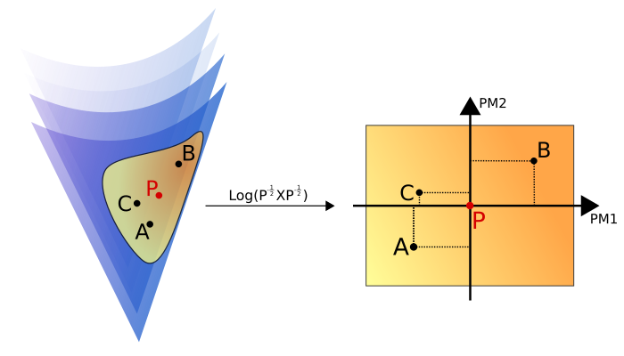
Hine et al. (2006)
Phylogenetic Principal Components
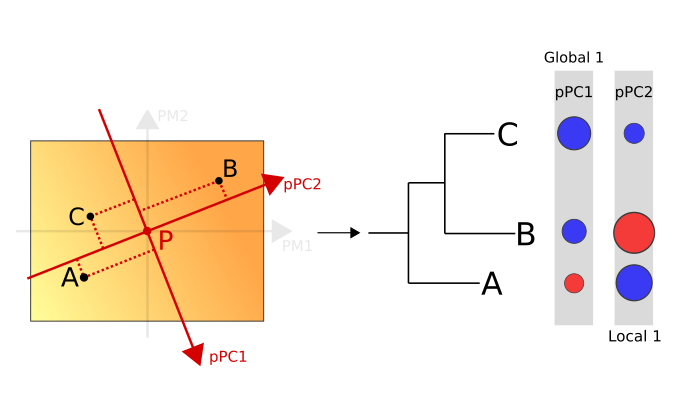
Jombart et al. (2010)
pPCA Details
Spectral decomposition of the matrix
\[ \frac{1}{2n}\mathbf{X}^t(\mathbf{W} + \mathbf{W}^t)\mathbf{X} \]
\(n\): number of tips;
\(\mathbf{X}\): data for tips (here, principal matrix projections);
\(\mathbf{W}\): phylogenetic distance matrix.
Reconstructing Matrix Variation
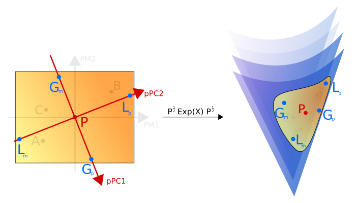
Matrix Variation along pPC Axes
Selection Response Decomposition (SRD; Marroig et al., 2011);
posterior distribution of differences in trait-specific covariance structure.
Covariance Matrix Diversity
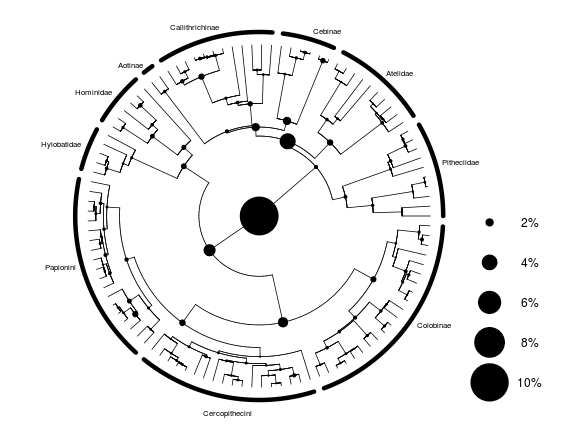
Tests for Distribution of Matrix Diversity
| Value | Expectation | Distance | P-value | |
|---|---|---|---|---|
| Single Node | 0.106 | 0.029 | 13.456 | < 10-4^ |
| Few Nodes | 0.248 | 0.139 | 13.545 | < 10-4^ |
| Tip/Root Skewness (Topology Only) | 0.632 | 0.505 | 12.197 | < 10-4^ |
| Tip/Root Skewness (Branch Lengths) | 0.381 | 0.505 | -11.067 | < 10-4^ |
pPCA Eigenvalue Distribution
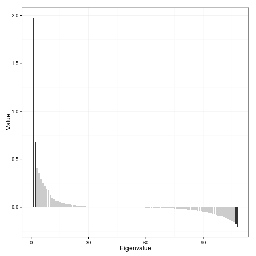
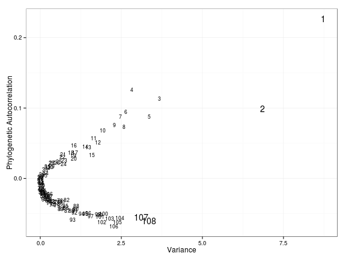
Global pPC1
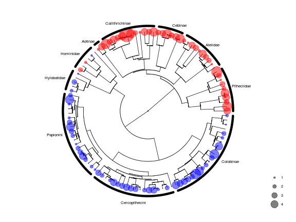
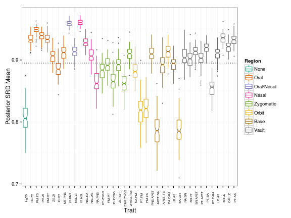
Global pPC2
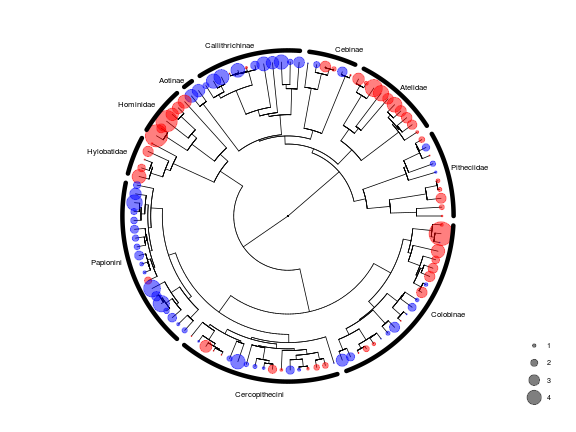
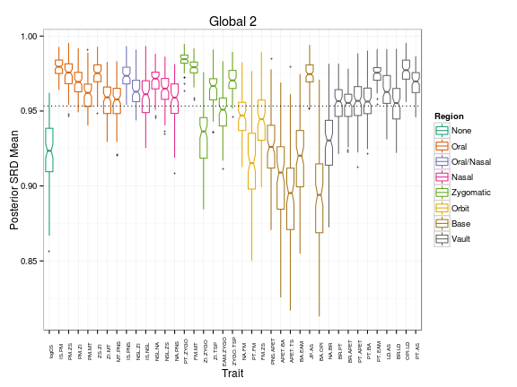
Local pPC1
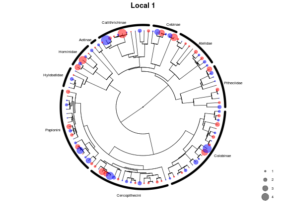
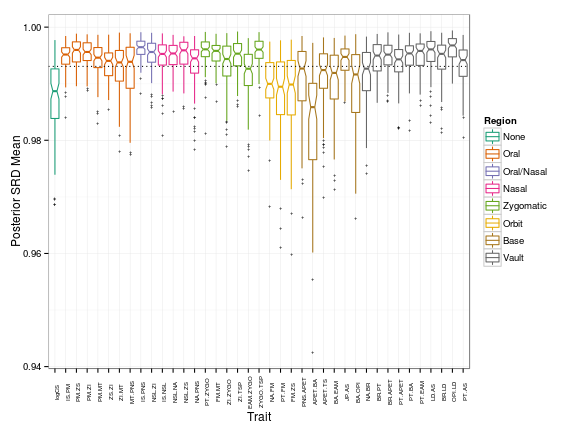
Local pPC2
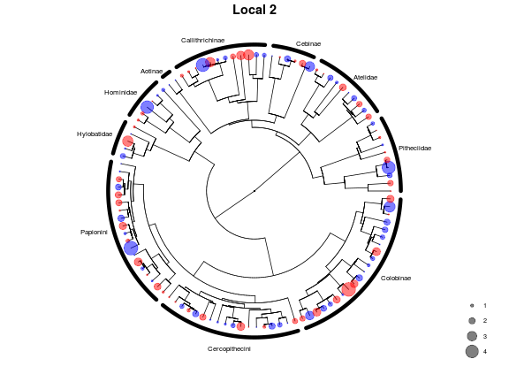
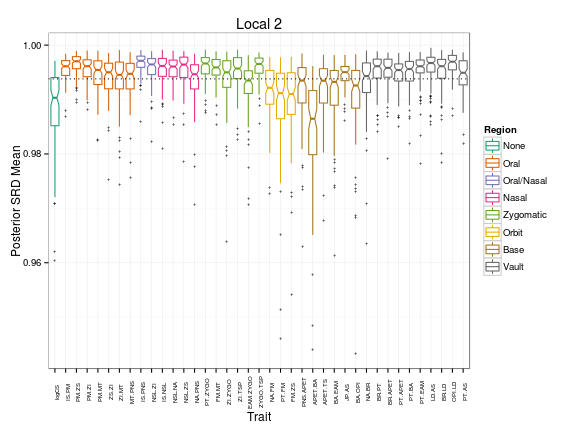
Concluding Remarks
Matrix disparity is weakly associated with divergence time;
Some regions maintain overall the same covariance structure:
- Oral, Nasal, Vault;
Other regions display a consistent pattern of changes:
- Basicranium, Orbit, log Centroid Size
Thus, the pattern of changes in covariance structure in anthropoid diversification is definitely not random with respect to functional and developmental interactions.
Thank you!
This work has been supported by grants from FAPESP and CNPq.